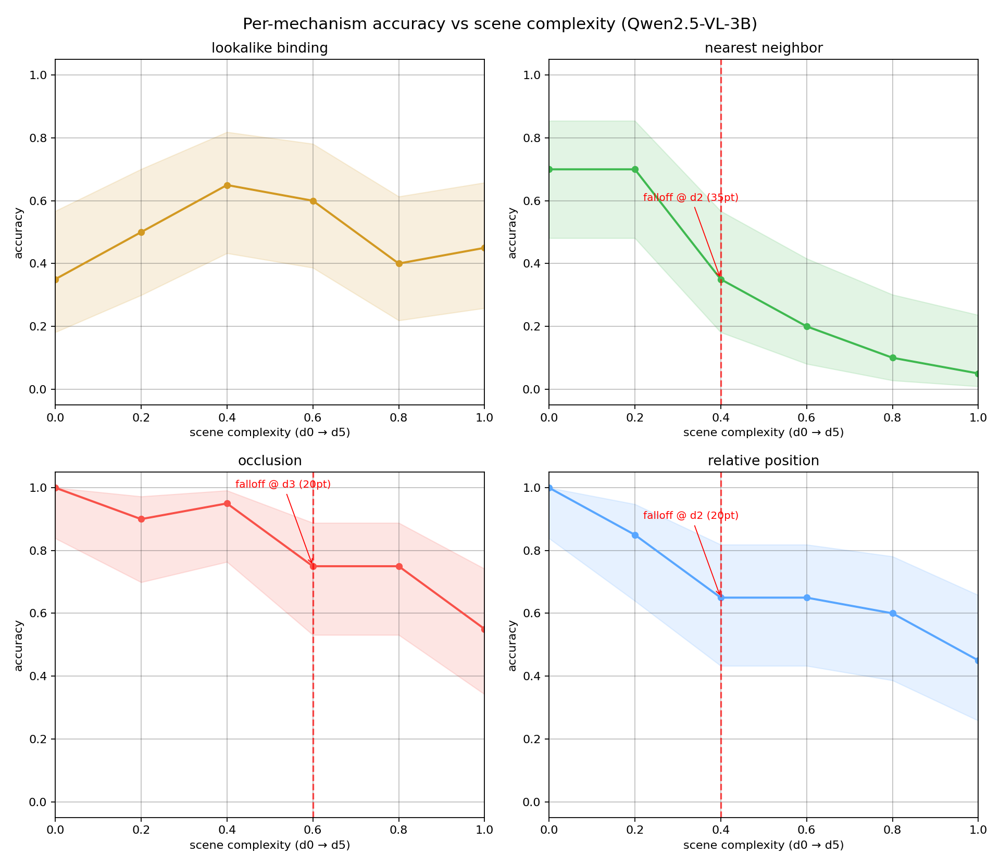

What this project is
Scene-complexity cliffs in VLM spatial reasoning are audited by attacking the benchmark itself. On 960 procedurally-controlled scenes (4 mechanisms × 6 complexity levels × 40 seeds) Qwen2.5-VL-3B is stress-tested zero-shot. A first sweep finds dramatic cliffs (nearest 0.70 → 0.05); a design audit shows a fixed answer color let the model cheat by reporting the singleton color — no spatial reasoning involved. After removing the shortcut, the cliffs are gone: nearest degrades gradually (0.70 → 0.35, no breakpoint) and the single survivor is a first-step level shift, not a collapse. The audit exposes one genuine mechanism boundary the shortcut had hidden — attribute-instance binding is a hard floor (~0.35–0.65) with a systematic 77% bottom-quadrant bias.
Read the technical report →
Credibility at a glance
960 scenes (4 mechanisms × 6 levels × 40 seeds) · Qwen2.5-VL-3B · pre-audit sweep archived